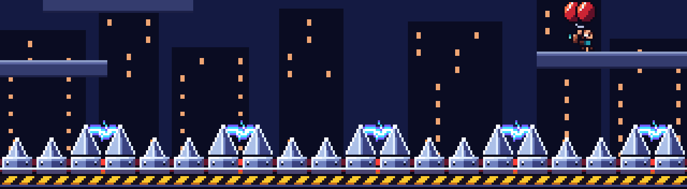
One key light from the upper left on all four. Flame and melt give off their own light. Left: v4. Right: v3, same loop and timing. Below each pair: the full screen at 3x, then the build input at 1x (16 frames per row, one row per tile variant).
Steel now has seven shades. Blades have a lit face, a ridge glint, a core shadow and reflected light on the far edge. Each sleeve is a bevelled block with a top face and a shadow side. The arc lights the blade faces next to it.

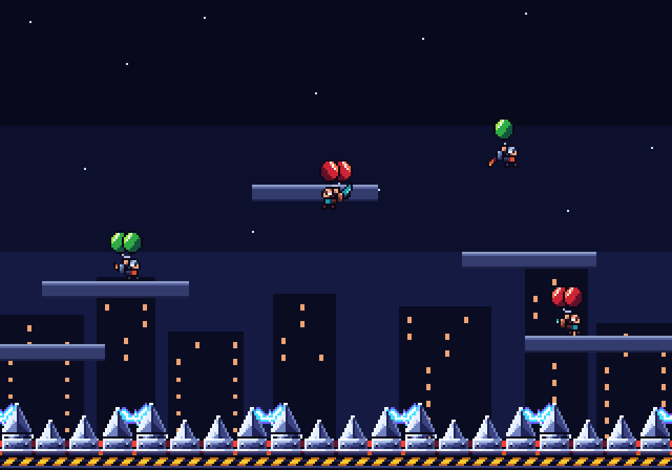

Nine sources of uneven strength and spacing over two tile variants (A B A B A). Flames have a white core, yellow and amber body, red shell, a cool magenta edge, a darker back row and violet smoke above the tips. Coals have an ash-lit top.
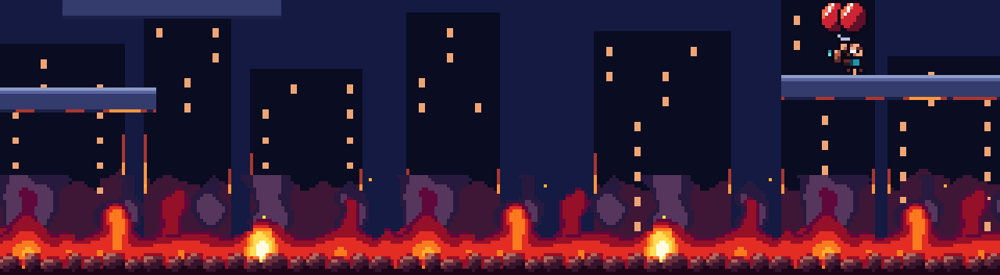
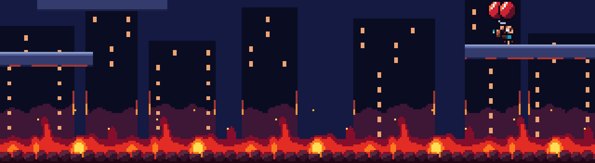
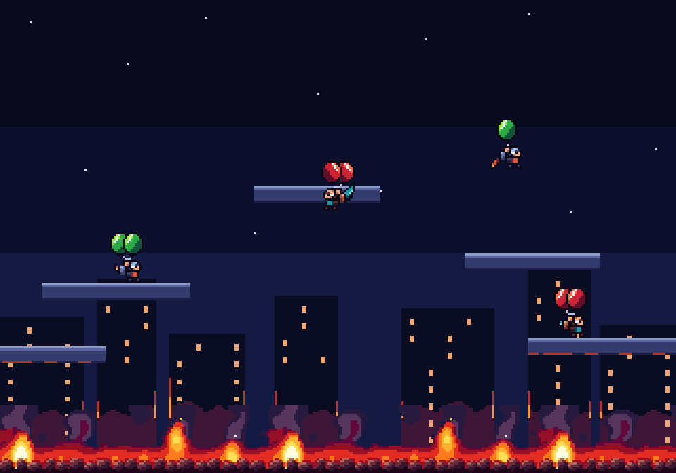
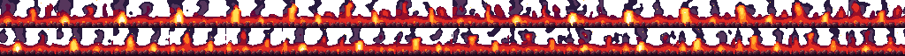
Seven water shades: lit crest, teal where light enters the wave, indigo self-shadow behind each crest, deep bands. Rocks are violet with a lit face and a highlight edge. Weed is green with a shadow side. Both read at 1x. The lurker is a sprite with its own palette.
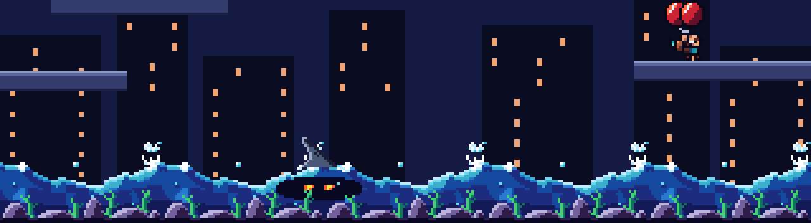

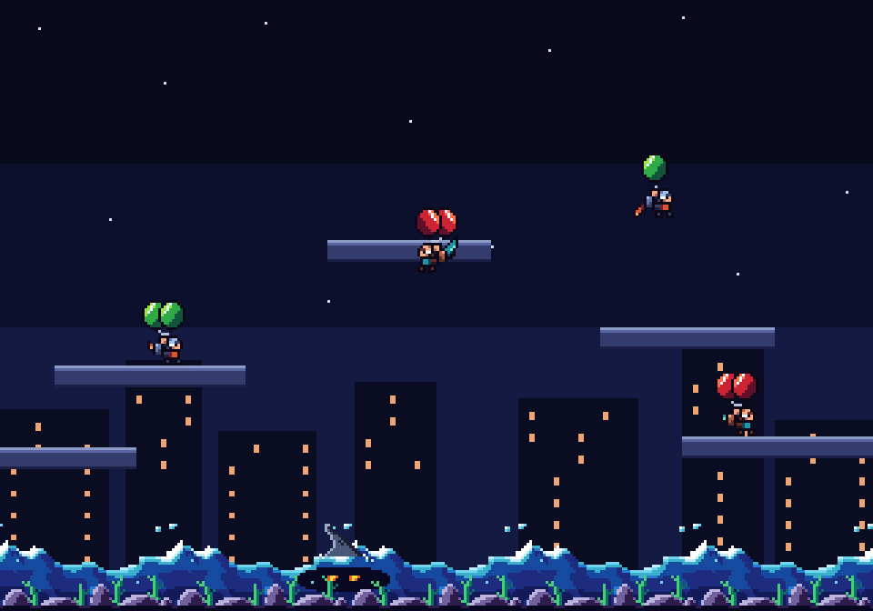
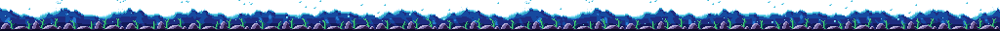
Two tile variants. The big bubble is in variant B only: two times across the screen, not five. Three smaller bubbles burst at other times. Crust plates have a top face, a side face, a violet shadow end, a glow underneath and a cast shadow on the melt. Cracks glow.
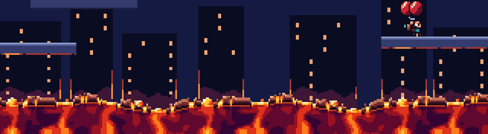

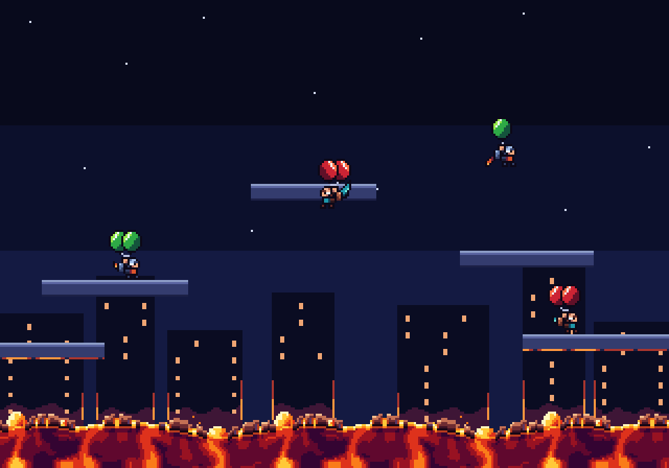
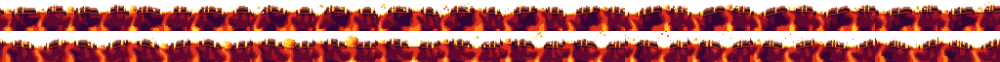